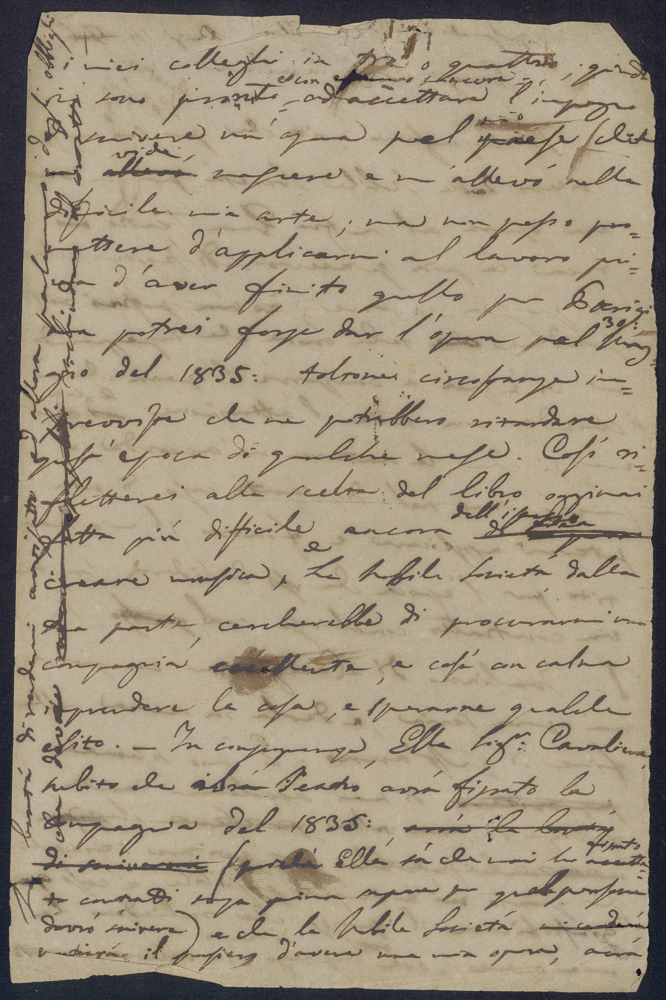

Parigi
14 Febrajo
Preg.mo
Sig.re
Cavaliere
Giovanni Galeota quatriemecote fil
Il lusinghiero invito che per suo GG mezzo
ricevo della Nobile Società per scrivere
un' opera al nostro Gran teatro Teatro San Carlo mi
reca la più piacevole sodisfazione che
si possa sentire ;
io non potrei ris-
pondere a tale onore che impegnando-
mi vi è più a comporre l' opera che mi
si chiede con tutta l'attenzione ed e con quei
mezzi che la natura m’ accorda , e
perciò sono nel dispiacente caso di non
potermi applicare e finire il mio spar-
tito per l'epoca che si desidera;
stante
un contratto conchiuso col questo R.eale
T.eatro Italiano di Parigi per comporre
un' opera seria e darla in scena nella
fine di quest' anno.
È mio sistema
per scrivere di mai accollarmi tanta
fattiga in una volta per fare il più
xxx possibile per evitare i fiaschi
per quanto mi è sempre possibile, e così giu
giustificare il prezzo che richiedono le
mie opere, ove ne impiego di tempo in ognuna quanto
i miei colleghi in tre o quattro ; quindi
io sono pronto e con estremo piacere ad accettare l'impegno
di scrivere un'opera pel mio paese che
che mi allevò vide crescere e allevò nella
difficile mia arte;
ma non posso pro-
mettere d'applicarmi al lavoro pri-
ma d'aver finito quello per Parigi
ma potrei forse dar l'opera pel 30: Mag-
gio del 1835: toltone circostanze im-
previste che ne potrebbero ritardare
quest' epoca di qualche mese .
Così ri -
fletterei alla scelta del libro libretto oggimai
fatta più difficile ancora di comporre dall'istesso
creare musica, e la Nobile Società, dalla
sua parte, cercherebbe di procurarmi una
compagnia eccellente e così con calma
imprendere la cosa e sperarne qualche
esito.
- In conseguenza Ella Sig.r Cavaliere
subito che al suo Teatro San Carlo avrà fissato la
compagnia del 1835: , avrà la bontà
di scrivermi
( perché Ella sà che mai ho fissato accetta-
to contratti senza prima sapere per quali persone
dovrò scrivere )
e che la Nobile Società mi corderà
nutrirà d'avere una mia opera , avrà
La bontà di rendermi avvisato e allora parlarmi degli obblighi
che dovrà xxx racchiudere il contratto.-
[13.II_note1]. Giovanni Galeota era segretario della Compagnia d’Industria e Belle Arti, che nel 1834 aveva rilevato la gestione del Teatro di San Carlo.
Fonte: Seminara 2017, p.547 n.328
[13.II_note2]. Questa porzione di testo è scritta trasversalmente nel margine sinistro della seconda facciata.
Fonte: Seminara 2017, p.548 n.328